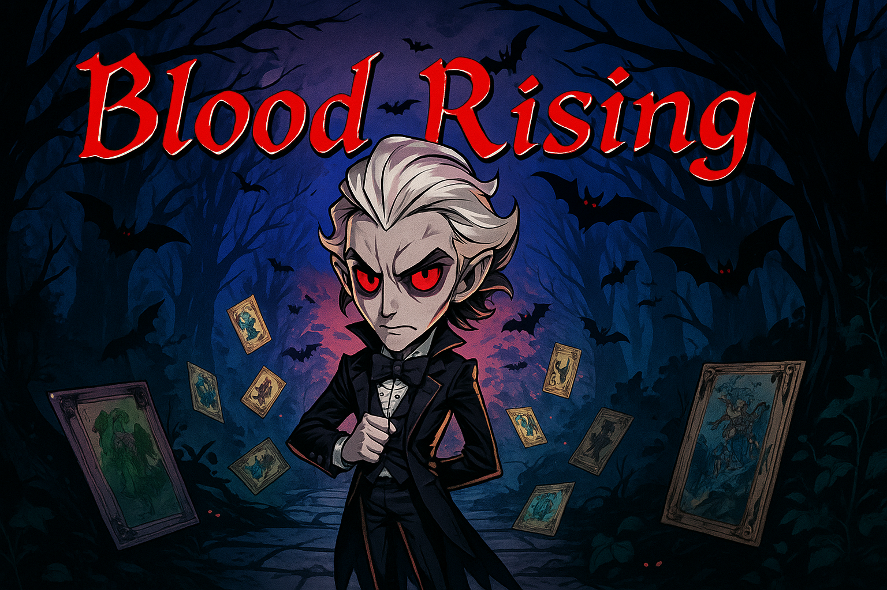

Real
systems
real
worlds
Unity developer
gameplay systems
tools & pipelines
interactive worlds
V1.0
Shirley
Unity developer
Engineering gameplay
for more meaningful worlds.
I build systems, craft gameplay, and keep exploring what makes an interactive experience responsive, readable, and worth returning to.
View selected work →
Building for a brighter, more playful tomorrow.
Featured project / 01Gameplay / systems / Unity

01
Blood
Rising
Systems / gameplay / Unity
- Format
- PC game
- Engine
- Unity
- Role
- Gameplay / systems
- Status
- Released
Open project →
A roguelike card-battle game where a vampire ancestor faces waves of adventurers and three heroes.